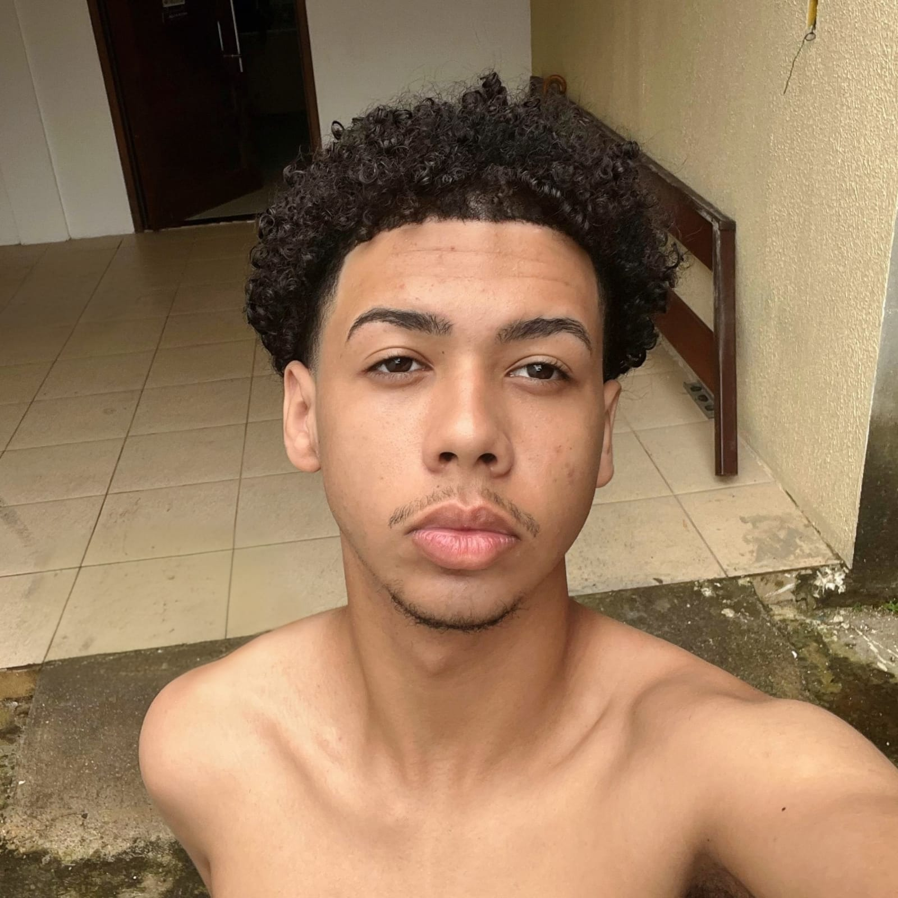

Curriculo
Caio Miguel dos santos lima

Email: caiomiguel2324@gmail.com
Endereço: Tabuleiro dos Martins, Maceió, Alagoas, Brasil.
Objetivos
Busco uma oportunidade de trabalho, a fim de colocar em prática conhecimentos adquiridos ao longo da minha vida acadêmica, aprender e contribuir nos resultados da empresa.
Formação acadêmica
Ensino medio com formação técnica incompleto
Conclusao: 2025
Cursando Técnico em informatica para internet Unidade integrada Sesi Senai Carlos Guido Ferraria Lobo - incompleto - 1112 Horas - Conclusao: 2025.
Competências e habilidades profissionais
Informatica avançada;
Pacote Office (Word, Power Point, Excel, Outlook);
Comunicação oral e escrita;
Organização, bom gerenciamento de tempo e trabalho em equipe.
Atividade extracurriculares
Participei de Projetos integradores durante o ensino medio, criando projeto empreendedores com o intuito de dar soluções para determinados problemas.